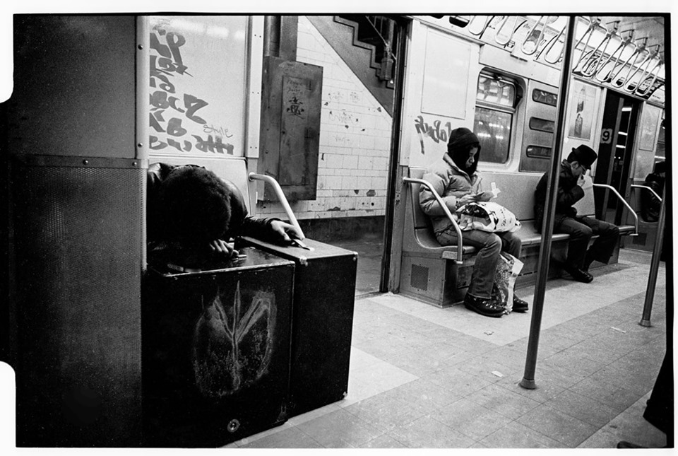
Setting up a little fort
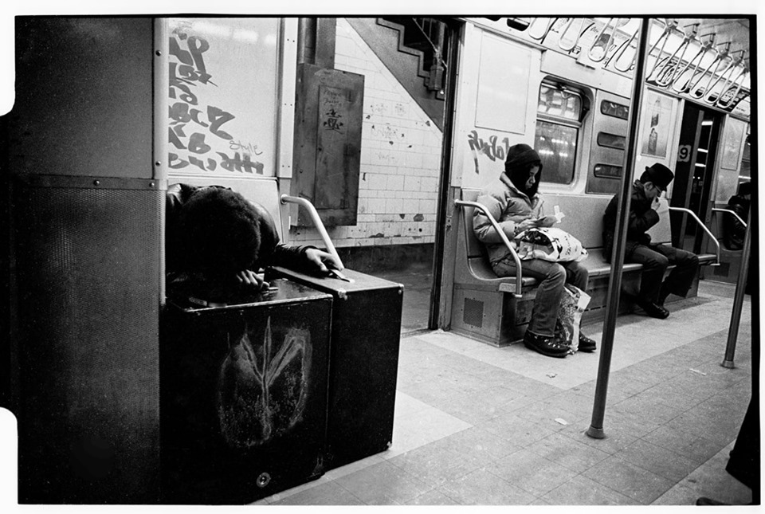
Setting up a little fort
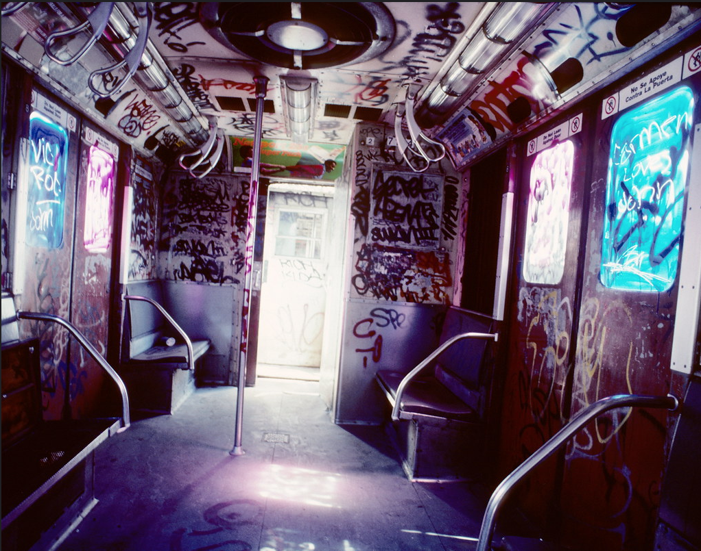
Destroyed car in the 80s
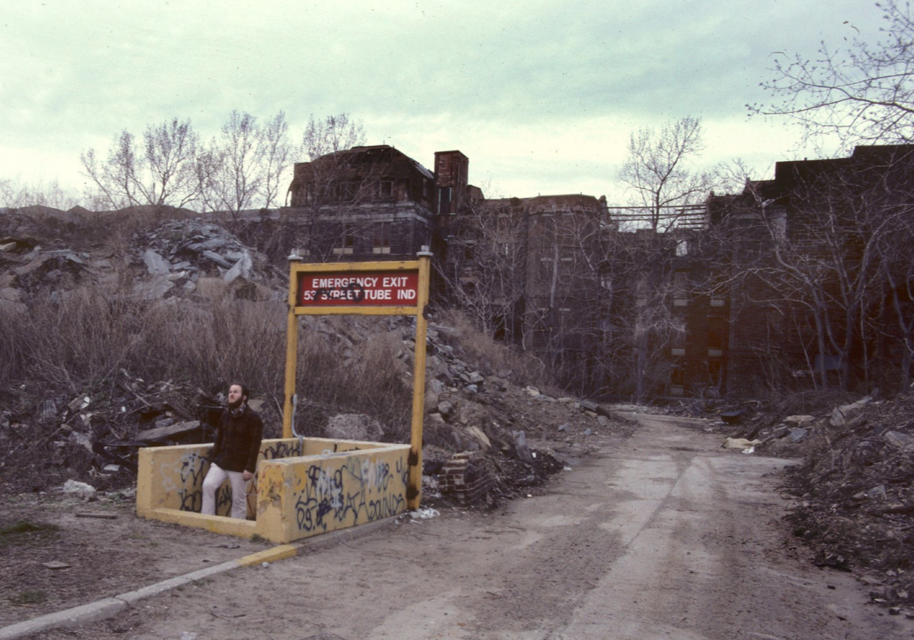
Roosevelt Island, 1980s
This is all I’ve got:

Cafe Figaro, Greenwich Village, 1960s
Fun at Coney Island, 1976

123rd and Lex, 1977
151st Street, 1986
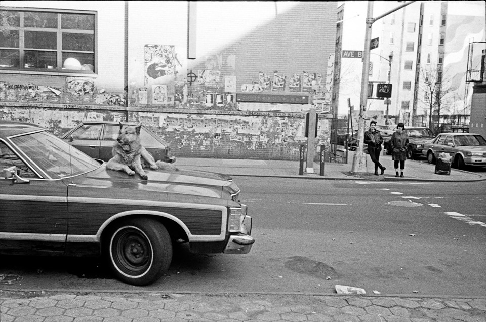
Avenue B and 7th Street, 1988

14th Street, 1975
15th St looking at 1st Ave, 1982
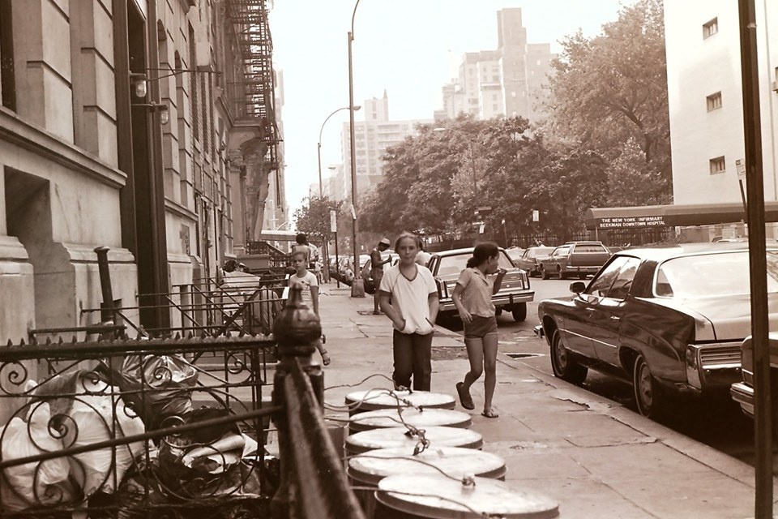
15th near 1st Ave, 1982

Washington Heights in the 1970s, at 165th and Amsterdam Ave.
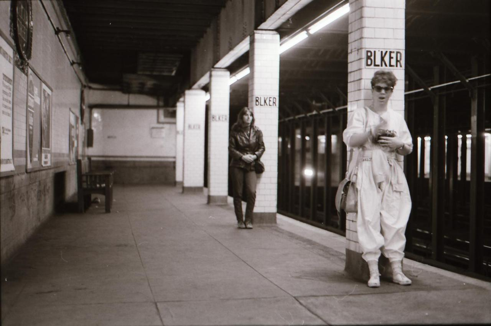
Bleecker St subway station, 1980s.
The most 80s pants I’ve ever seen.

Lexington Ave, around 59th St, 1980

Coney Island, 1986

Times Square 1960 Street Preacher New York City Vintage by Christian Montone

Duane Reed wasn’t always fancy.

59th St, 1979, a live model in the Fiorucci store window.

23rd and Lex, 1979
Brooklyn/ Coney Island: Surf Avenue (c Early 1960s) -photographer unknown
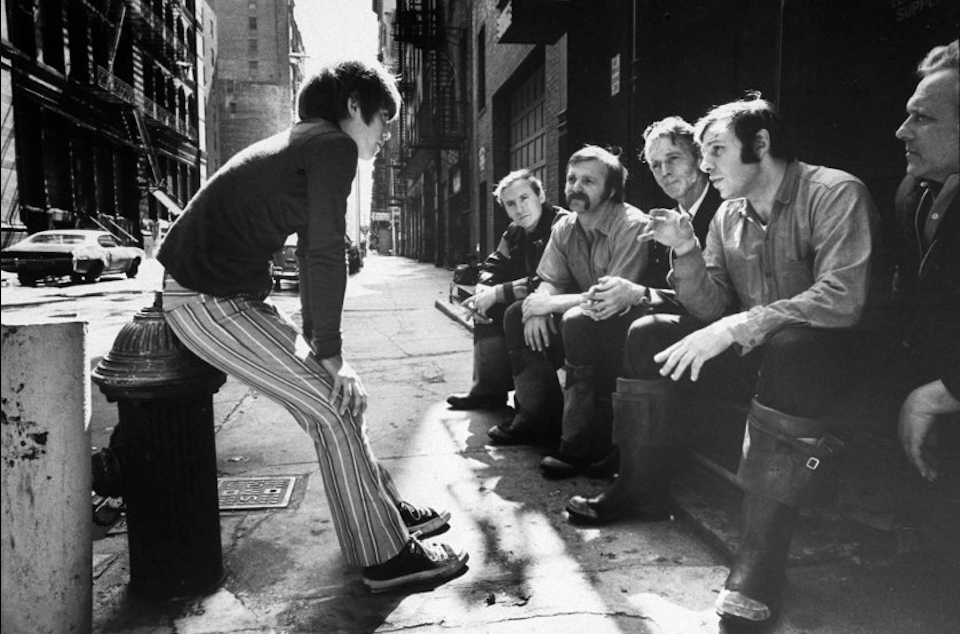
Getting the facts of life.

Grand and Mott, 1970
First Ave, 1973
The premiere of “In Like Flint” at the Capitol Theater, 51st and Broadway. The first 200 to show up in a bathing suit got in free.
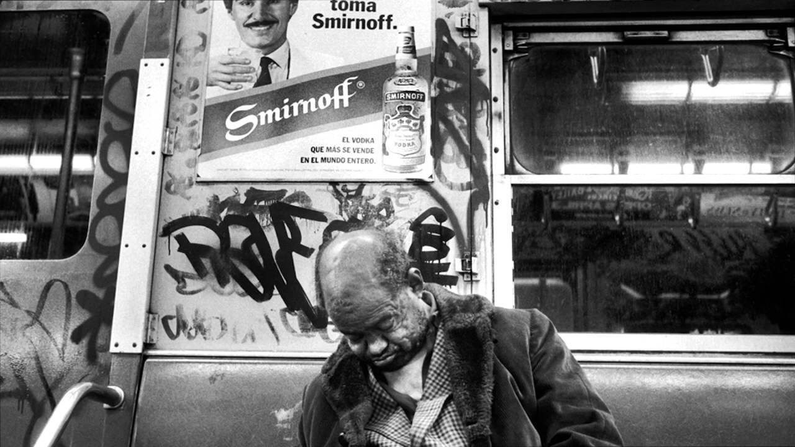
Smirnoff, fantasy vs reality.

Amsterdam Ave and 92nd, 1962
NYC, 1983, RA Clayton

True love.
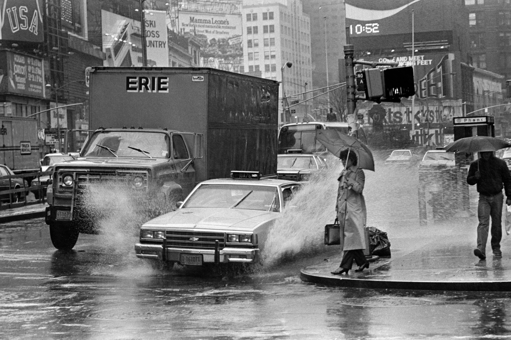
Screwed in 3, 2, 1,…
70s style in the rain

No way he’s gonna clear that puddle…
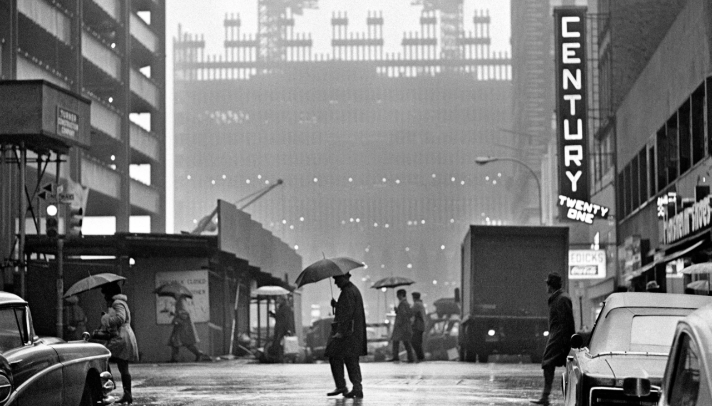
WTC under construction, 1970

Son, that ain’t where you tag.

Riverside Park in the 70s